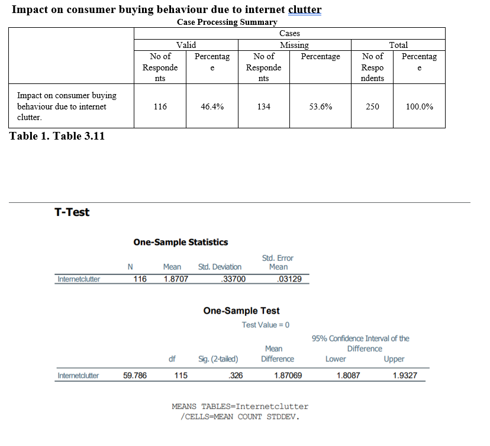
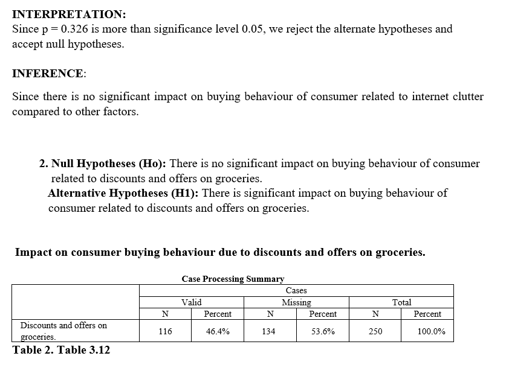
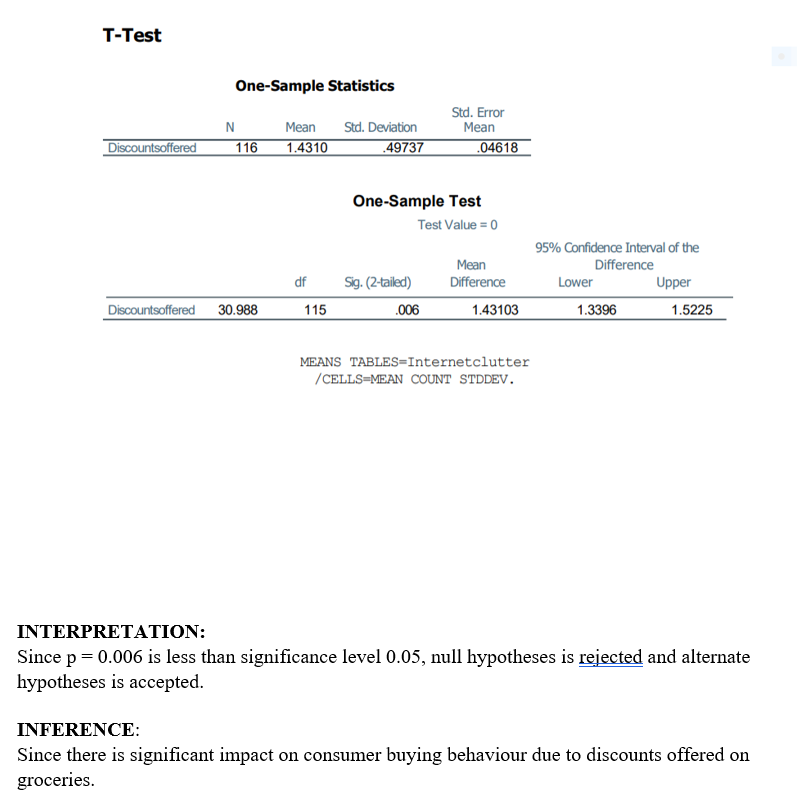

WhiteLeo Portfolio
-
Comprehensive Market Research Execution
Spearheaded an in-depth research project to analyze consumer perceptions towards online grocery shopping amidst the COVID-19 pandemic, overseeing the survey design, distribution, and data collection from a diverse sample of 250 respondents across various demographics, primarily focusing on the age group of 18-24
Advanced Data Analysis and Interpretation
Demonstrated advanced proficiency in statistical analysis by employing SPSS Software for data evaluation, conducting one-sample t-tests, and interpreting complex data sets to extract actionable insights. Skillfully analyzed consumer preferences, spending habits, and behavioral intentions, contributing to strategic decision-making for the development of the Wilstop app.
Strategic Marketing and Product Development Insights
Provided strategic insights into enhancing online grocery shopping experiences, underlining the significance of integrating quality assurance measures, expanding product variety, and competitive pricing strategies. Offered detailed recommendations for the Wilstop app to capture a larger market share by addressing consumer concerns and leveraging opportunities revealed through consumer feedback.
Consumer Behavior Insights and Engagement Strategies
Gained deep insights into consumer shopping behaviors, preferences, and expectations from online grocery platforms. Identified key factors driving consumer satisfaction, including the demand for high-quality products, convenience, and variety. Recommended innovative marketing strategies to increase consumer engagement and loyalty, such as introducing promotional offers and ensuring a diverse range of in-demand and exotic grocery items.
Effective Team Leadership and Collaboration
Played a pivotal role in a collaborative team environment, contributing to all phases of the research project from conceptualization to analysis and reporting. Demonstrated exceptional leadership by coordinating efforts across the team to ensure timely completion and high-quality output.
Impactful Communication of Research Findings
Excellently communicated complex research findings to stakeholders through detailed graphical data interpretations, clear and concise hypothesis testing results, and strategic recommendations. Prepared and presented a comprehensive report that highlighted key findings, consumer insights, and actionable strategies to enhance the Wilstop app's market position.
Innovation and Consumer-Centric Product Strategy
Advocated for the inclusion of niche and in-demand products such as organic foods, exotic spices, and specialty baking ingredients in the Wilstop app's inventory. This recommendation was based on consumer feedback highlighting the difficulty of finding these items in conventional outlets, positioning the app to cater to specific consumer needs and preferences.
Technical Skillset and Analytical Tools Proficiency
Showcased expertise in a range of technical skills and analytical tools, including SPSS for statistical analysis and Google Forms for survey dissemination. Demonstrated a strong understanding of e-commerce fundamentals and consumer behavior analysis, essential for driving growth in digital retail platforms.
T-tests
  